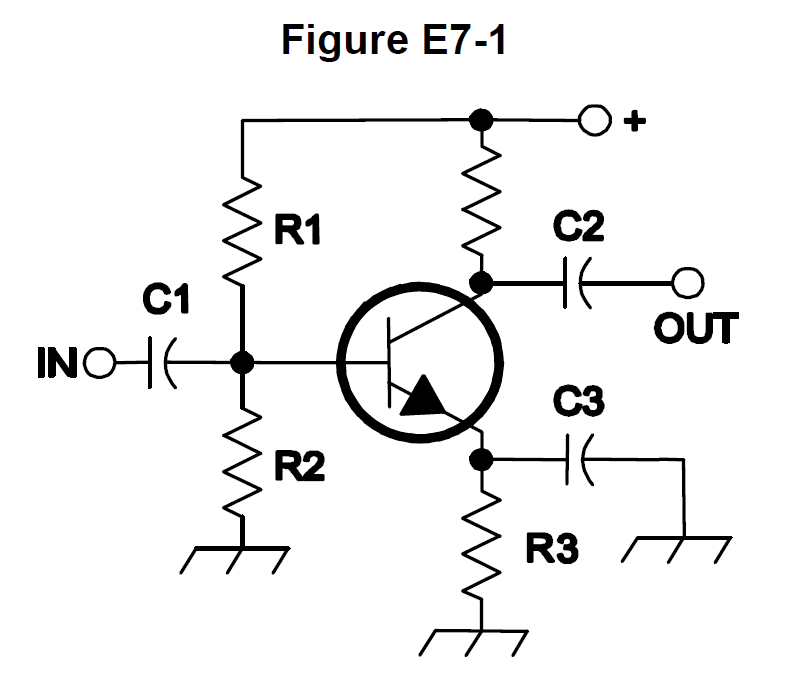
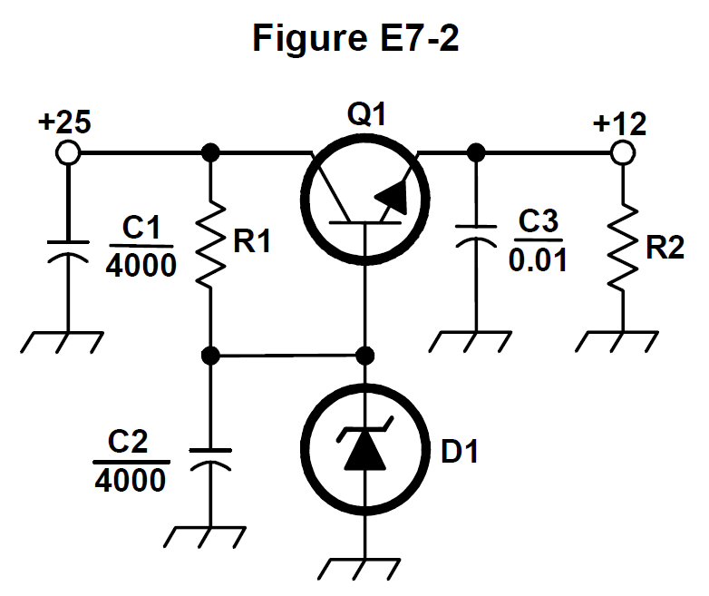
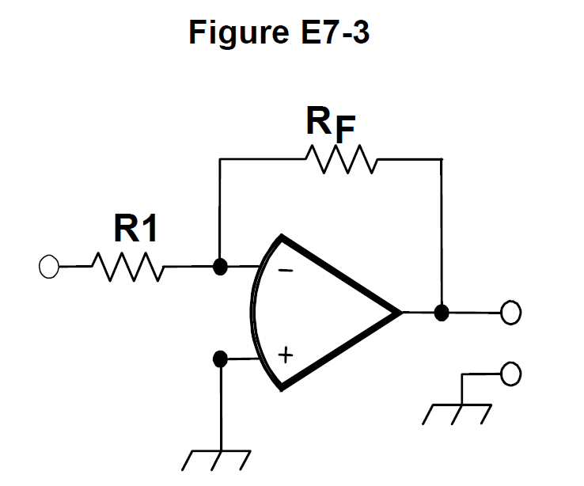

All 99 Ham Radio Amateur Extra questions for E7 Practical Circuits with the correct answers marked, from the official 2024-2028 question pool. Test yourself with the free practice exam.
E7A01
Which circuit is bistable?
A. An AND gate
B. An OR gate
C. A flip-flop ✓
D. A bipolar amplifier
E7A02
What is the function of a decade counter?
A. It produces one output pulse for every 10 input pulses ✓
B. It decodes a decimal number for display on a seven-segment LED display
C. It produces 10 output pulses for every input pulse
D. It decodes a binary number for display on a seven-segment LED display
E7A03
Which of the following can divide the frequency of a pulse train by 2?
A. An XOR gate
B. A flip-flop ✓
C. An OR gate
D. A multiplexer
E7A04
How many flip-flops are required to divide a signal frequency by 16?
A. 4 ✓
B. 6
C. 8
D. 16
E7A05
Which of the following circuits continuously alternates between two states without an external clock signal?
A. Monostable multivibrator
B. J-K flip-flop
C. T flip-flop
D. Astable multivibrator ✓
E7A06
What is a characteristic of a monostable multivibrator?
A. It switches temporarily to an alternate state for a set time ✓
B. It produces a continuous square wave
C. It stores one bit of data
D. It maintains a constant output voltage, regardless of variations in the input voltage
E7A07
What logical operation does a NAND gate perform?
A. It produces a 0 at its output only if all inputs are 0
B. It produces a 1 at its output only if all inputs are 1
C. It produces a 0 at its output if some but not all inputs are 1
D. It produces a 0 at its output only if all inputs are 1 ✓
E7A08
What logical operation does an OR gate perform?
A. It produces a 1 at its output if any input is 1 ✓
B. It produces a 0 at its output if all inputs are 1
C. It produces a 0 at its output if some but not all inputs are 1
D. It produces a 1 at its output if all inputs are 0
E7A09
What logical operation is performed by a two-input exclusive NOR gate?
A. It produces a 0 at its output only if all inputs are 0
B. It produces a 1 at its output only if all inputs are 1
C. It produces a 0 at its output if one and only one of its inputs is 1 ✓
D. It produces a 1 at its output if one and only one input is 1
E7A10
What is a truth table?
A. A list of inputs and corresponding outputs for an op-amp
B. A list of inputs and corresponding outputs for a digital device ✓
C. A diagram showing logic states when the digital gate output is true
D. A table of logic symbols that indicate the logic states of an op-amp
E7A11
What does “positive logic” mean in reference to logic devices?
A. The logic devices have high noise immunity
B. High voltage represents a 1, low voltage a 0 ✓
C. The logic circuit is in the “true” condition
D. 1s and 0s are defined as different positive voltage levels
E7B01
For what portion of the signal cycle does each active element in a push-pull, Class AB amplifier conduct?
A. More than 180 degrees but less than 360 degrees ✓
B. Exactly 180 degrees
C. The entire cycle
D. Less than 180 degrees
E7B02
What is a Class D amplifier?
A. An amplifier that uses switching technology to achieve high efficiency ✓
B. A low power amplifier that uses a differential amplifier for improved linearity
C. An amplifier that uses drift-mode FETs for high efficiency
D. An amplifier biased to be relatively free from distortion
E7B03
What circuit is required at the output of an RF switching amplifier?
A. A filter to remove harmonic content ✓
B. A high-pass filter to compensate for low gain at low frequencies
C. A matched load resistor to prevent damage by switching transients
D. A temperature compensating load resistor to improve linearity
E7B04
What is the operating point of a Class A common emitter amplifier?
A. Approximately halfway between saturation and cutoff ✓
B. Approximately halfway between the emitter voltage and the base voltage
C. At a point where the bias resistor equals the load resistor
D. At a point where the load line intersects the zero bias current curve
E7B05
What can be done to prevent unwanted oscillations in an RF power amplifier?
A. Tune the stage for minimum loading
B. Tune both the input and output for maximum power
C. Install parasitic suppressors and/or neutralize the stage ✓
D. Use a phase inverter in the output filter
E7B06
What is a characteristic of a grounded-grid amplifier?
A. High power gain
B. Low input impedance ✓
C. High electrostatic damage protection
D. Low bandwidth
E7B07
Which of the following is the likely result of using a Class C amplifier to amplify a single-sideband phone signal?
A. Reduced intermodulation products
B. Increased overall intelligibility
C. Reduced third-order intermodulation
D. Signal distortion and excessive bandwidth ✓
E7B08
Why are switching amplifiers more efficient than linear amplifiers?
A. Switching amplifiers operate at higher voltages
B. The switching device is at saturation or cutoff most of the time ✓
C. Linear amplifiers have high gain resulting in higher harmonic content
D. Switching amplifiers use push-pull circuits
E7B09
What is characteristic of an emitter follower (or common collector) amplifier?
A. Low input impedance and phase inversion from input to output
B. Differential inputs and single output
C. Acts as an OR circuit if one input is grounded
D. Input and output signals in-phase ✓
E7B10
In Figure E7-1, what is the purpose of R1 and R2?

A. Load resistors
B. Voltage divider bias ✓
C. Self bias
D. Feedback
E7B11
In Figure E7-1, what is the purpose of R3?
A. Fixed bias
B. Emitter bypass
C. Output load resistor
D. Self bias ✓
E7B12
What type of amplifier circuit is shown in Figure E7-1?
A. Common base
B. Common collector
C. Common emitter ✓
D. Emitter follower
E7C01
How are the capacitors and inductors of a low-pass filter Pi-network arranged between the network’s input and output?
A. Two inductors are in series between the input and output, and a capacitor is connected between the two inductors and ground
B. Two capacitors are in series between the input and output, and an inductor is connected between the two capacitors and ground
C. An inductor is connected between the input and ground, another inductor is connected between the output and ground, and a capacitor is connected between the input and output
D. A capacitor is connected between the input and ground, another capacitor is connected between the output and ground, and an inductor is connected between the input and output ✓
E7C02
What is the frequency response of a T-network with series capacitors and a shunt inductor?
A. Low-pass
B. High-pass ✓
C. Band-pass
D. Notch
E7C03
What is the purpose of adding an inductor to a Pi-network to create a Pi-L-network?
A. Greater harmonic suppression ✓
B. Higher efficiency
C. To eliminate one capacitor
D. Greater transformation range
E7C04
How does an impedance-matching circuit transform a complex impedance to a resistive impedance?
A. It introduces negative resistance to cancel the resistive part of impedance
B. It introduces transconductance to cancel the reactive part of impedance
C. It cancels the reactive part of the impedance and changes the resistive part to the desired value ✓
D. Reactive currents are dissipated in matched resistances
E7C05
Which filter type has ripple in the passband and a sharp cutoff?
A. A Butterworth filter
B. An active LC filter
C. A passive op-amp filter
D. A Chebyshev filter ✓
E7C06
What are the characteristics of an elliptical filter?
A. Gradual passband rolloff with minimal stop-band ripple
B. Extremely flat response over its pass band with gradually rounded stop-band corners
C. Extremely sharp cutoff with one or more notches in the stop band ✓
D. Gradual passband rolloff with extreme stop-band ripple
E7C07
Which describes a Pi-L network?
A. A Phase Inverter Load network
B. A Pi-network with an additional output series inductor ✓
C. A network with only three discrete parts
D. A matching network in which all components are isolated from ground
E7C08
Which of the following is most frequently used as a band-pass or notch filter in VHF and UHF transceivers?
A. A Sallen-Key filter
B. A helical filter ✓
C. A swinging choke filter
D. A finite impulse response filter
E7C09
What is a crystal lattice filter?
A. A power supply filter made with interlaced quartz crystals
B. An audio filter made with four quartz crystals that resonate at 1 kHz intervals
C. A filter using lattice-shaped quartz crystals for high-Q performance
D. A filter for low-level signals made using quartz crystals ✓
E7C10
Which of the following filters is used in a 2-meter band repeater duplexer?
A. A crystal filter
B. A cavity filter ✓
C. A DSP filter
D. An L-C filter
E7C11
Which of the following measures a filter’s ability to reject signals in adjacent channels?
A. Passband ripple
B. Phase response
C. Shape factor ✓
D. Noise factor
E7D01
How does a linear electronic voltage regulator work?
A. It has a ramp voltage as its output
B. It eliminates the need for a pass transistor
C. The control element duty cycle is proportional to the line or load conditions
D. The conduction of a control element is varied to maintain a constant output voltage ✓
E7D02
How does a switchmode voltage regulator work?
A. By alternating the output between positive and negative voltages
B. By varying the duty cycle of pulses input to a filter ✓
C. By varying the conductivity of a pass element
D. By switching between two Zener diode reference voltages
E7D03
What device is used as a stable voltage reference?
A. A Zener diode ✓
B. A digital-to-analog converter
C. An SCR
D. An analog-to-digital converter
E7D04
Which of the following describes a three-terminal voltage regulator?
A. A series current source
B. A series regulator ✓
C. A shunt regulator
D. A shunt current source
E7D05
Which of the following types of linear voltage regulator operates by loading the unregulated voltage source?
A. A constant current source
B. A series regulator
C. A shunt current source
D. A shunt regulator ✓
E7D06
What is the purpose of Q1 in the circuit shown in Figure E7-2?

A. It provides negative feedback to improve regulation
B. It provides a constant load for the voltage source
C. It controls the current to keep the output voltage constant ✓
D. It provides regulation by switching or “chopping” the input DC voltage
E7D07
What is the purpose of C2 in the circuit shown in Figure E7-2?
A. It bypasses rectifier output ripple around D1 ✓
B. It is a brute force filter for the output
C. To prevent self-oscillation
D. To provide fixed DC bias for Q1
E7D08
What type of circuit is shown in Figure E7-2?
A. Switching voltage regulator
B. Common emitter amplifier
C. Linear voltage regulator ✓
D. Common base amplifier
E7D09
How is battery operating time calculated?
A. Average current divided by capacity in amp-hours
B. Average current divided by internal resistance
C. Capacity in amp-hours divided by average current ✓
D. Internal resistance divided by average current
E7D10
Why is a switching type power supply less expensive and lighter than an equivalent linear power supply?
A. The inverter design does not require an output filter circuit
B. The control circuitry uses less current, therefore smaller heat sinks are required
C. The high frequency inverter design uses much smaller transformers and filter components for an equivalent power output ✓
D. It recovers power from the unused portion of the AC cycle, thus using fewer components
E7D11
What is the purpose of an inverter connected to a solar panel output?
A. Reduce AC ripple on the output
B. Maintain voltage with varying illumination levels
C. Prevent discharge when panel is not illuminated
D. Convert the panel’s output from DC to AC ✓
E7D12
What is the dropout voltage of a linear voltage regulator?
A. Minimum input voltage for rated power dissipation
B. Maximum output voltage drop when the input voltage is varied over its specified range
C. Minimum input-to-output voltage required to maintain regulation ✓
D. Maximum that the output voltage may decrease at rated load
E7D13
Which of the following calculates power dissipated by a series linear voltage regulator?
A. Input voltage multiplied by input current
B. Input voltage divided by output current
C. Voltage difference from input to output multiplied by output current ✓
D. Output voltage multiplied by output current
E7D14
What is the purpose of connecting equal-value resistors across power supply filter capacitors connected in series?
A. Equalize the voltage across each capacitor
B. Discharge the capacitors when voltage is removed
C. Provide a minimum load on the supply
D. All these choices are correct ✓
E7D15
What is the purpose of a step-start circuit in a high-voltage power supply?
A. To provide a dual-voltage output for reduced power applications
B. To compensate for variations of the incoming line voltage
C. To prevent arcing across the input power switch or relay contacts
D. To allow the filter capacitors to charge gradually ✓
E7E01
Which of the following can be used to generate FM phone signals?
A. Balanced modulation of the audio amplifier
B. Reactance modulation of a local oscillator ✓
C. Reactance modulation of the final amplifier
D. Balanced modulation of a local oscillator
E7E02
What is the function of a reactance modulator?
A. Produce PM or FM signals by varying a resistance
B. Produce AM signals by varying an inductance
C. Produce AM signals by varying a resistance
D. Produce PM or FM signals by varying a capacitance ✓
E7E03
What is a frequency discriminator?
A. An FM generator circuit
B. A circuit for filtering closely adjacent signals
C. An automatic band-switching circuit
D. A circuit for detecting FM signals ✓
E7E04
What is one way to produce a single-sideband phone signal?
A. Use a balanced modulator followed by a filter ✓
B. Use a reactance modulator followed by a mixer
C. Use a loop modulator followed by a mixer
D. Use a product detector with a DSB signal
E7E05
What is added to an FM speech channel to boost the higher audio frequencies?
A. A de-emphasis network
B. A harmonic enhancer
C. A heterodyne enhancer
D. A pre-emphasis network ✓
E7E06
Why is de-emphasis used in FM communications receivers?
A. For compatibility with transmitters using phase modulation ✓
B. To reduce impulse noise reception
C. For higher efficiency
D. To remove third-order distortion products
E7E07
What is meant by the term “baseband” in radio communications?
A. The lowest frequency band that the transmitter or receiver covers
B. The frequency range occupied by a message signal prior to modulation ✓
C. The unmodulated bandwidth of the transmitted signal
D. The basic oscillator frequency in an FM transmitter that is multiplied to increase the deviation and carrier frequency
E7E08
What are the principal frequencies that appear at the output of a mixer?
A. Two and four times the input frequency
B. The square root of the product of input frequencies
C. The two input frequencies along with their sum and difference frequencies ✓
D. 1.414 and 0.707 times the input frequency
E7E09
What occurs when the input signal levels to a mixer are too high?
A. Spurious mixer products are generated ✓
B. Mixer blanking occurs
C. Automatic limiting occurs
D. Excessive AGC voltage levels are generated
E7E10
How does a diode envelope detector function?
A. By rectification and filtering of RF signals ✓
B. By breakdown of the Zener voltage
C. By mixing signals with noise in the transition region of the diode
D. By sensing the change of reactance in the diode with respect to frequency
E7E11
Which type of detector is used for demodulating SSB signals?
A. Discriminator
B. Phase detector
C. Product detector ✓
D. Phase comparator
E7F01
What is meant by “direct sampling” in software defined radios?
A. Software is converted from source code to object code during operation of the receiver
B. I and Q signals are generated by digital processing without the use of RF amplification
C. Incoming RF is digitized by an analog-to-digital converter without being mixed with a local oscillator signal ✓
D. A switching mixer is used to generate I and Q signals directly from the RF input
E7F02
What kind of digital signal processing audio filter is used to remove unwanted noise from a received SSB signal?
A. An adaptive filter ✓
B. A crystal-lattice filter
C. A Hilbert-transform filter
D. A phase-inverting filter
E7F03
What type of digital signal processing filter is used to generate an SSB signal?
A. An adaptive filter
B. A notch filter
C. A Hilbert-transform filter ✓
D. An elliptical filter
E7F04
Which method generates an SSB signal using digital signal processing?
A. Mixing products are converted to voltages and subtracted by adder circuits
B. A frequency synthesizer removes unwanted sidebands
C. Varying quartz crystal characteristics are emulated in digital form
D. Signals are combined in quadrature phase relationship ✓
E7F05
How frequently must an analog signal be sampled to be accurately reproduced?
A. At least half the rate of the highest frequency component of the signal
B. At least twice the rate of the highest frequency component of the signal ✓
C. At the same rate as the highest frequency component of the signal
D. At four times the rate of the highest frequency component of the signal
E7F06
What is the minimum number of bits required to sample a signal with a range of 1 volt at a resolution of 1 millivolt?
A. 4 bits
B. 6 bits
C. 8 bits
D. 10 bits ✓
E7F07
What function is performed by a Fast Fourier Transform?
A. Converting analog signals to digital form
B. Converting digital signals to analog form
C. Converting signals from the time domain to the frequency domain ✓
D. Converting signals from the frequency domain to the time domain
E7F08
What is the function of decimation?
A. Converting data to binary-coded decimal form
B. Reducing the effective sample rate by removing samples ✓
C. Attenuating the signal
D. Removing unnecessary significant digits
E7F09
Why is an anti-aliasing filter required in a decimator?
A. It removes high-frequency signal components that would otherwise be reproduced as lower frequency components ✓
B. It peaks the response of the decimator, improving bandwidth
C. It removes low-frequency signal components to eliminate the need for DC restoration
D. It notches out the sampling frequency to avoid sampling errors
E7F10
What aspect of receiver analog-to-digital conversion determines the maximum receive bandwidth of a direct-sampling software defined radio (SDR)?
A. Sample rate ✓
B. Sample width in bits
C. Integral non-linearity
D. Differential non-linearity
E7F11
What sets the minimum detectable signal level for a direct-sampling software defined receiver in the absence of atmospheric or thermal noise?
A. Sample clock phase noise
B. Reference voltage level and sample width in bits ✓
C. Data storage transfer rate
D. Missing codes and jitter
E7F12
Which of the following is generally true of Finite Impulse Response (FIR) filters?
A. FIR filters can delay all frequency components of the signal by the same amount ✓
B. FIR filters are easier to implement for a given set of passband rolloff requirements
C. FIR filters can respond faster to impulses
D. All these choices are correct
E7F13
What is the function of taps in a digital signal processing filter?
A. To reduce excess signal pressure levels
B. Provide access for debugging software
C. Select the point at which baseband signals are generated
D. Provide incremental signal delays for filter algorithms ✓
E7F14
Which of the following would allow a digital signal processing filter to create a sharper filter response?
A. Higher data rate
B. More taps ✓
C. Lower Q
D. Double-precision math routines
E7G01
What is the typical output impedance of an op-amp?
A. Very low ✓
B. Very high
C. 100 ohms
D. 10,000 ohms
E7G02
What is the frequency response of the circuit in E7-3 if a capacitor is added across the feedback resistor?

A. High-pass filter
B. Low-pass filter ✓
C. Band-pass filter
D. Notch filter
E7G03
What is the typical input impedance of an op-amp?
A. 100 ohms
B. 10,000 ohms
C. Very low
D. Very high ✓
E7G04
What is meant by the term “op-amp input offset voltage”?
A. The output voltage of the op-amp minus its input voltage
B. The difference between the output voltage of the op-amp and the input voltage required in the immediately following stage
C. The differential input voltage needed to bring the open loop output voltage to zero ✓
D. The potential between the amplifier input terminals of the op-amp in an open loop condition
E7G05
How can unwanted ringing and audio instability be prevented in an op-amp audio filter?
A. Restrict both gain and Q ✓
B. Restrict gain but increase Q
C. Restrict Q but increase gain
D. Increase both gain and Q
E7G06
What is the gain-bandwidth of an operational amplifier?
A. The maximum frequency for a filter circuit using that type of amplifier
B. The frequency at which the open-loop gain of the amplifier equals one ✓
C. The gain of the amplifier at a filter’s cutoff frequency
D. The frequency at which the amplifier’s offset voltage is zero
E7G07
What voltage gain can be expected from the circuit in Figure E7-3 when R1 is 10 ohms and RF is 470 ohms?
A. 0.21
B. 4700
C. 47 ✓
D. 24
E7G08
How does the gain of an ideal operational amplifier vary with frequency?
A. It increases linearly with increasing frequency
B. It decreases linearly with increasing frequency
C. It decreases logarithmically with increasing frequency
D. It does not vary with frequency ✓
E7G09
What will be the output voltage of the circuit shown in Figure E7-3 if R1 is 1,000 ohms, RF is 10,000 ohms, and 0.23 volts DC is applied to the input?
A. 0.23 volts
B. 2.3 volts
C. -0.23 volts
D. -2.3 volts ✓
E7G10
What absolute voltage gain can be expected from the circuit in Figure E7-3 when R1 is 1,800 ohms and RF is 68 kilohms?
A. 1
B. 0.03
C. 38 ✓
D. 76
E7G11
What absolute voltage gain can be expected from the circuit in Figure E7-3 when R1 is 3,300 ohms and RF is 47 kilohms?
A. 28
B. 14 ✓
C. 7
D. 0.07
E7G12
What is an operational amplifier?
A. A high-gain, direct-coupled differential amplifier with very high input impedance and very low output impedance ✓
B. A digital audio amplifier whose characteristics are determined by components external to the amplifier
C. An amplifier used to increase the average output of frequency modulated amateur signals to the legal limit
D. A RF amplifier used in the UHF and microwave regions
E7H01
What are three common oscillator circuits?
A. Taft, Pierce, and negative feedback
B. Pierce, Fenner, and Beane
C. Taft, Hartley, and Pierce
D. Colpitts, Hartley, and Pierce ✓
E7H02
What is a microphonic?
A. An IC used for amplifying microphone signals
B. Distortion caused by RF pickup on the microphone cable
C. Changes in oscillator frequency caused by mechanical vibration ✓
D. Excess loading of the microphone by an oscillator
E7H03
What is a phase-locked loop?
A. An electronic servo loop consisting of a ratio detector, reactance modulator, and voltage-controlled oscillator
B. An electronic circuit also known as a monostable multivibrator
C. An electronic servo loop consisting of a phase detector, a low-pass filter, a voltage-controlled oscillator, and a stable reference oscillator ✓
D. An electronic circuit consisting of a precision push-pull amplifier with a differential phase input
E7H04
How is positive feedback supplied in a Colpitts oscillator?
A. Through a tapped coil
B. Through link coupling
C. Through a capacitive divider ✓
D. Through a neutralizing capacitor
E7H05
How is positive feedback supplied in a Pierce oscillator?
A. Through a tapped coil
B. Through link coupling
C. Through a neutralizing capacitor
D. Through a quartz crystal ✓
E7H06
Which of these functions can be performed by a phase-locked loop?
A. Wide-band AF and RF power amplification
B. Frequency synthesis and FM demodulation ✓
C. Photovoltaic conversion and optical coupling
D. Comparison of two digital input signals and digital pulse counting
E7H07
How can an oscillator’s microphonic responses be reduced?
A. Use NP0 capacitors
B. Reduce noise on the oscillator’s power supply
C. Increase the gain
D. Mechanically isolate the oscillator circuitry from its enclosure ✓
E7H08
Which of the following components can be used to reduce thermal drift in crystal oscillators?
A. NP0 capacitors ✓
B. Toroidal inductors
C. Wirewound resistors
D. Non-inductive resistors
E7H09
What type of frequency synthesizer circuit uses a phase accumulator, lookup table, digital-to-analog converter, and a low-pass anti-alias filter?
A. A direct digital synthesizer ✓
B. A hybrid synthesizer
C. A phase-locked loop synthesizer
D. A direct conversion synthesizer
E7H10
What information is contained in the lookup table of a direct digital synthesizer (DDS)?
A. The phase relationship between a reference oscillator and the output waveform
B. Amplitude values that represent the desired waveform ✓
C. The phase relationship between a voltage-controlled oscillator and the output waveform
D. Frequently used receiver and transmitter frequencies
E7H11
What are the major spectral impurity components of direct digital synthesizers?
A. Broadband noise
B. Digital conversion noise
C. Spurious signals at discrete frequencies ✓
D. Harmonics of the local oscillator
E7H12
Which of the following ensures that a crystal oscillator operates on the frequency specified by the crystal manufacturer?
A. Provide the crystal with a specified parallel inductance
B. Provide the crystal with a specified parallel capacitance ✓
C. Bias the crystal at a specified voltage
D. Bias the crystal at a specified current
E7H13
Which of the following is a technique for providing highly accurate and stable oscillators needed for microwave transmission and reception?
A. Use a GPS signal reference
B. Use a rubidium stabilized reference oscillator
C. Use a temperature-controlled high Q dielectric resonator
D. All these choices are correct ✓